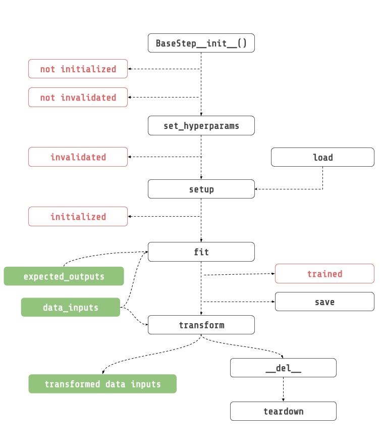

Step Saving And Lifecycle¶
This page introduces the concept of lifecycle in a Neuraxle BaseStep. You can find a deailed component API reference here.
Lifecycle¶

BaseStep.**init**(hyperparams, hyperparams_space, name): This is where you initialize all of your props, and fitted state.
set_hyperparams(hyperperparams): Configure your steps’ hyperparameters before initializing it.
setup(context): Initialize the step before it runs. Only from here and not before that heavy things should be created (e.g.: things inside GPU), and NOT in the constructor.
fit(data_inputs, expected_outputs): Fit step with the given data inputs, and expected outputs.
transform(data_inputs): Transform given data inputs.
save(context, full_dump): Save step using the execution context to create the directory to save the step into.
teardown(): Teardown step after program execution. Inverse of setup, and it should clear memory. Override this method if you need to clear memory.
Step Saving¶
In Neuraxle, each step has a list of savers that can load, and save steps. Steps are saved using the execution context to create the directory to save the step into. The saving happens by looping through all of the step savers in the reversed order. Each savers must inherit from BaseSaver.
The cool thing about this is that you don’t even need the source code to load your steps. This enables a lot of thing like parallel processing, and distributed computing.
Saver¶
Some savers just save parts of objects, some save it all or what remains. The JoblibStepSaver has to be called last because it needs a stripped version of the step. You might need to create your own saver if you are using a step that is not serializable. For instance, this will most likely happen if the step is a deep learning model.
Fortunately, we have already built a set of savers for tensorflow 1, and 2 in Neuraxle-Tensorflow. We plan to do the same thing for Pytorch soon.
Custom Saver Example¶
Each step needs to be stripped of all its not serialisable parts so that the JoblibStepSaver (default saver) can serialize the step using joblib. Here is an example of a custom saver that strips the multiprocessing Queue from a step called SequentialQueuedPipeline:
[1]:
from neuraxle.base import BaseSaver, BaseStep, ExecutionContext, Identity
from queue import Queue
class ObservableQueueStepSaver(BaseSaver):
def save_step(self, step: 'BaseStep', context: 'ExecutionContext') -> 'BaseStep':
step.queue = None
step.observers = []
return step
def can_load(self, step: 'BaseStep', context: 'ExecutionContext'):
return True
def load_step(self, step: 'BaseStep', context: 'ExecutionContext') -> 'BaseStep':
step.queue = Queue()
return step
You can then add this saver to the list of savers of any step, and it will be executed before being serialised with joblib:
[2]:
class IdentityWithQueue(Identity):
def __init__(self):
super().__init__(savers=[ObservableQueueStepSaver()])
def setup(self, context=None):
if not self.is_initialized:
self.queue = Queue()
super().setup()
return self
Awesome ! Now, the multiprocessing.Queue object will be set to None before the JoblibStepSaver saves this step.
Saving Example¶
Pipeline¶
First, let’s define a simple linear regression pipeline. Notice that we also included the IdentityWithQueue step from the previous example.
[3]:
from sklearn.linear_model import LogisticRegression
from neuraxle.base import BaseSaver, BaseStep, NonFittableMixin, ExecutionContext
from neuraxle.pipeline import Pipeline
from neuraxle.steps.flow import TrainOnlyWrapper
from neuraxle.steps.output_handlers import OutputTransformerWrapper
from neuraxle.steps.sklearn import SKLearnWrapper
from neuraxle.steps.data import DataShuffler
from neuraxle.hyperparams.space import HyperparameterSamples, HyperparameterSpace
from neuraxle.hyperparams.distributions import LogUniform, Boolean, Choice, RandInt
import numpy as np
import shutil
class NumpyRavel(NonFittableMixin, BaseStep):
def transform(self, data_inputs):
if data_inputs is None:
return data_inputs
data_inputs = data_inputs if isinstance(data_inputs, np.ndarray) else np.array(data_inputs)
return data_inputs.ravel()
PIPELINE_NAME = 'saved_pipeline_name'
cache_folder = 'cache_folder'
pipeline = Pipeline([
IdentityWithQueue(),
TrainOnlyWrapper(DataShuffler()),
OutputTransformerWrapper(NumpyRavel()),
SKLearnWrapper(LogisticRegression(), HyperparameterSpace({
'C': LogUniform(0.01, 10.0),
'fit_intercept': Boolean(),
'dual': Boolean(),
'penalty': Choice(['l1', 'l2']),
'max_iter': RandInt(20, 200)
}))
], cache_folder=cache_folder).set_name(PIPELINE_NAME)
data_inputs = np.expand_dims(np.array([0, 1, 2, 3]), axis=-1)
expected_outputs = np.expand_dims(np.array([0, 2, 4, 6]), axis=-1)
pipeline, outputs = pipeline.fit_transform(data_inputs, expected_outputs)
print('outputs: {}'.format(outputs))
outputs: [4 6 2 0]
Full Dump Saving¶
Next, let’s save the full pipeline even if steps are not invalidated or initialized. To do this, we need to call the save method with an ExecutionContext, and the full_dump argument to True:
[4]:
pipeline.save(ExecutionContext(cache_folder), full_dump=True)
print('saved pipeline ! ')
saved pipeline !
[5]:
!find . | grep "cache_folder/*"
./cache_folder
./cache_folder/saved_pipeline_name
./cache_folder/saved_pipeline_name/saved_pipeline_name.joblib
./cache_folder/saved_pipeline_name/TrainOnlyWrapper
./cache_folder/saved_pipeline_name/TrainOnlyWrapper/DataShuffler
./cache_folder/saved_pipeline_name/TrainOnlyWrapper/DataShuffler/DataShuffler.joblib
./cache_folder/saved_pipeline_name/TrainOnlyWrapper/TrainOnlyWrapper.joblib
./cache_folder/saved_pipeline_name/SKLearnWrapper_LogisticRegression
./cache_folder/saved_pipeline_name/SKLearnWrapper_LogisticRegression/SKLearnWrapper_LogisticRegression.joblib
./cache_folder/saved_pipeline_name/IdentityWithQueue
./cache_folder/saved_pipeline_name/IdentityWithQueue/IdentityWithQueue.joblib
./cache_folder/saved_pipeline_name/OutputTransformerWrapper
./cache_folder/saved_pipeline_name/OutputTransformerWrapper/OutputTransformerWrapper.joblib
./cache_folder/saved_pipeline_name/OutputTransformerWrapper/NumpyRavel
./cache_folder/saved_pipeline_name/OutputTransformerWrapper/NumpyRavel/NumpyRavel.joblib
Full Dump Loading¶
To Load a full pipeline without any source code, you can call use the load method from the ExecutionContext:
[6]:
loaded_pipeline = ExecutionContext(cache_folder).load(PIPELINE_NAME)
print('loaded pipeline without any source code !')
outputs = pipeline.transform(data_inputs)
print('outputs: {}'.format(outputs))
loaded pipeline without any source code !
outputs: [2 0 4 6]
[7]:
shutil.rmtree(cache_folder)